| 日付 | 2025年1月11日（土） |
|---|---|
| 山域 | 房総 |
| メンバー | 単独 |
| 山行形態 | 日帰り |
| アクセス | 車 |
| ルート (Map) | 駐車場所 (7:51) - (7:54) 石尊山北口参道 - (8:21) 石尊山 - (10:00) もみ太郎 - (10:47) 初日山 (11:21) - (11:57) もみ太郎 - (13:30) 石尊山 - (13:53) 七里川温泉 - (14:01) 駐車場所 |
2025年の初登り。久々に千葉の山に行ってみることにする。
今回は石尊山～麻綿原高原のロングコース。
麻綿原高原は2017年に子供が小さい頃に訪れており、7年振りの訪問だ。
車道の路肩が広くなったところに車を停める。標高160m。
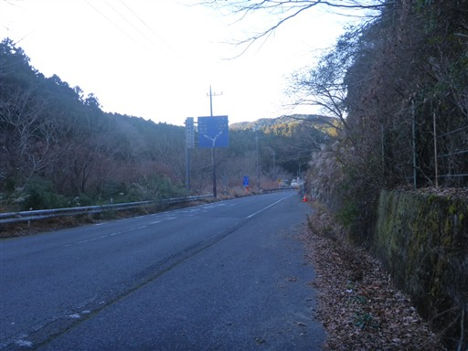
登山口は3.4mの標識の少し手前。
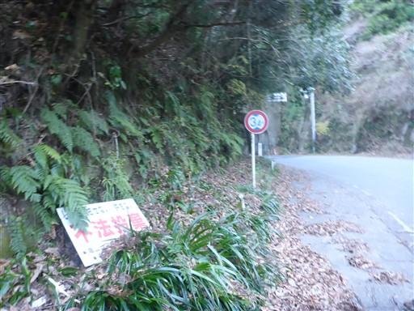
登山口を示す標識は小さく分かりづらい。
冬以外は草が生い茂ってほとんど見えなくなりそうだ。
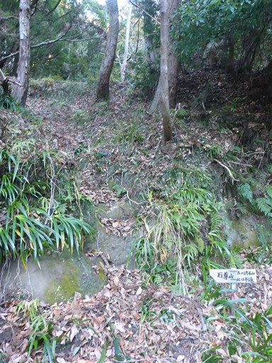
植林地帯の中を登っていく。
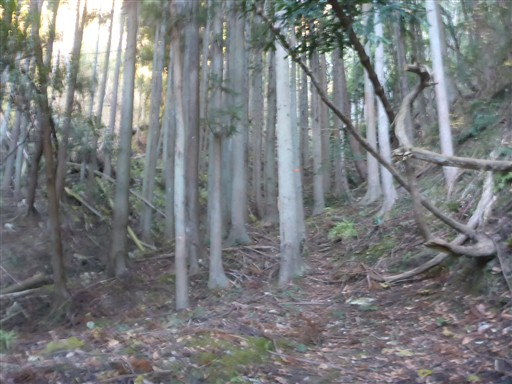
稜線直下で洞窟を発見。見たところ人工物のようだが、何目的のものなのか不明だ。
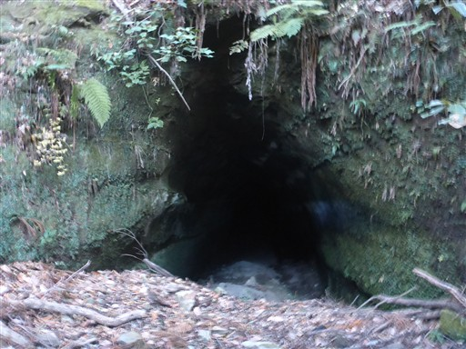
あっという間に稜線に到達する。
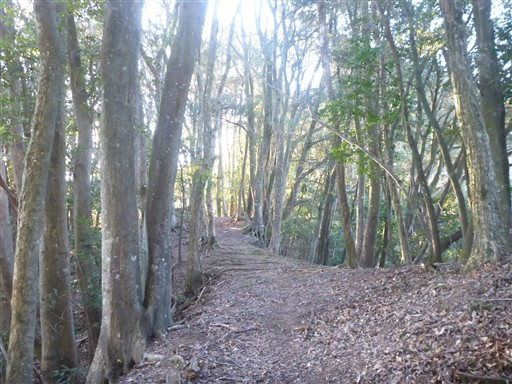
しばらくは植林地帯が続く。
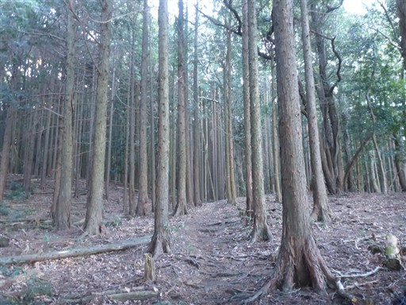
歩いてすぐに石尊山に到着。標高348m。
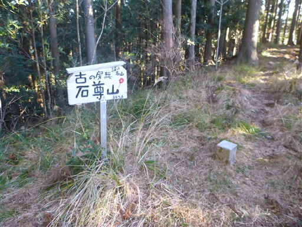
山頂は登山道の途中という感じで、展望も広がらず、冴えないピークだ。
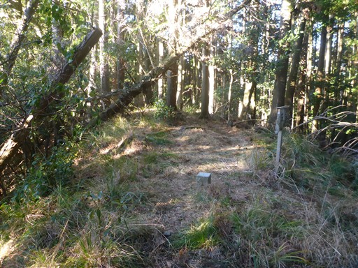
山頂の少し先に石祠が3つある。
先ほどの山頂標識に「祠の名山」と書かれていたのはこの石祠のことのようだ。
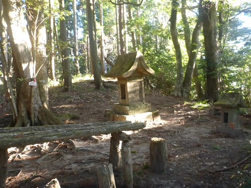
一番大きな石祠は、山ではあまり見かけないサイズの大きさだ。
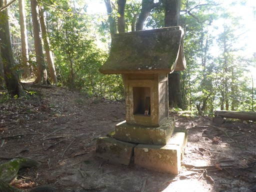
石尊山を辞し、麻綿原高原へのロングコースに入っていく。
コース入口には電波塔が建っている。
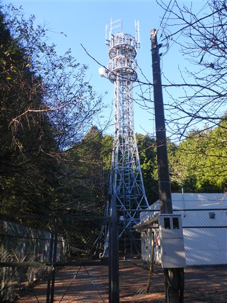
大木の幹が折れて転がっている。残った部分から葉が生えているが、
木から生えているのか、別の植物が根を下ろしているのかよく分からない。
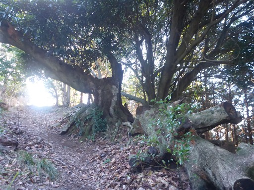
木の幹が途中で折れ曲がり、そこから枝か幹が縦に何本も伸びている。
なんとも不思議な形の木だ。
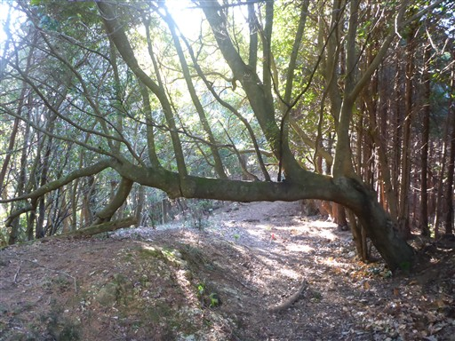
気持ちの良い樹林帯の中の道になる。
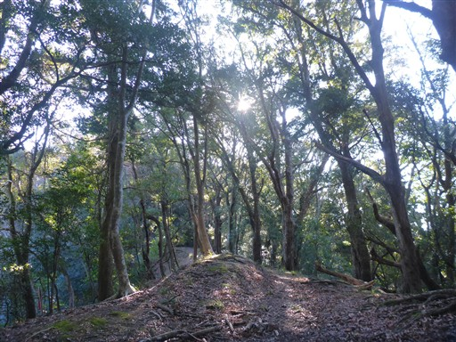
この木も大きい。この辺りは巨木が多い。よく自然が残されているようだ。
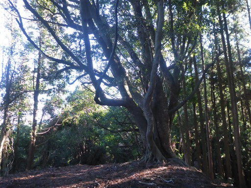
アップダウンはほとんどなく歩きやすい。
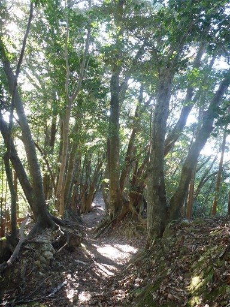
石が階段状に削られている。
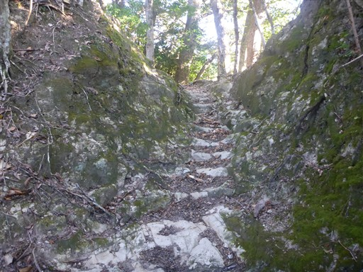
大きな岩の麓を通り過ぎる。
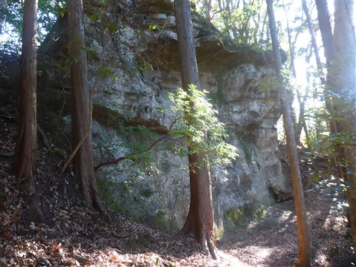
道を間違えやすそうな場所にはロープがある。
それでも全体的に道は分かりづらく、何度もルートを間違える。
ここは、2003年に30名の道迷い遭難事件があったコースだ。
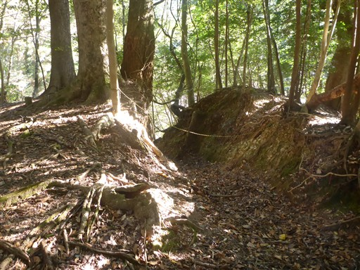
痩せ尾根の急斜面が現れる。
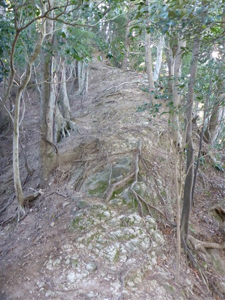
そのあとは転がり落ちそうなほどの急斜面の下り坂。
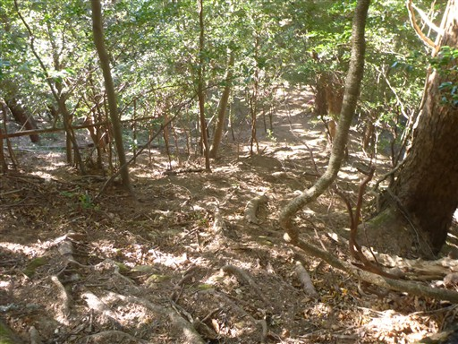
巨大な倒木の下を潜る。
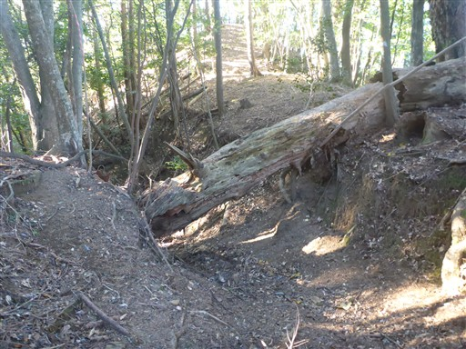
道は少々荒れている。
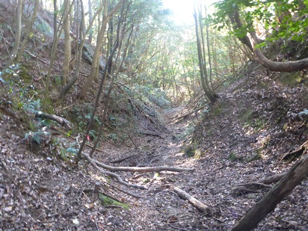
三本杉、のように見えるが、樹種は杉ではなさそうだ。
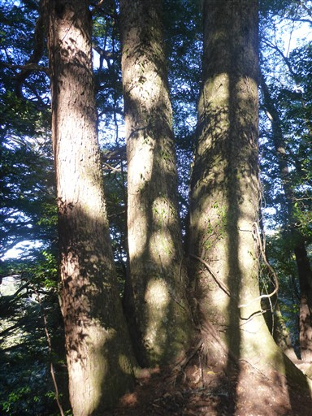
ちょうどここで半分のようだ。「南関東最後の原生林」と書かれている。
最後かどうか分からないが、貴重な原生林であることは確かだ。
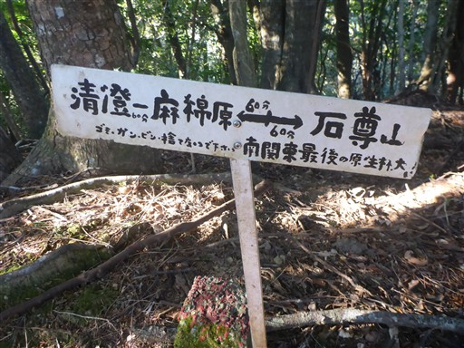
ヒメユズリハの標識。保護樹と書かれているが、珍しい木なのだろうか？
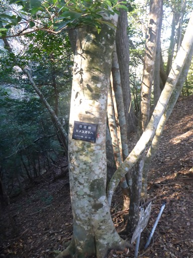
もみ太郎。モミの大木だ。
周囲に同クラスの大きなモミの木は多いが、この木はその中で特に大きい。
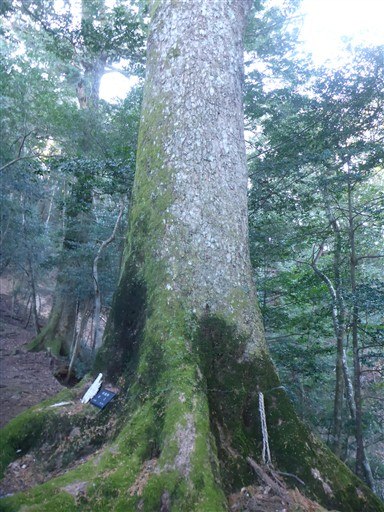
モミの木を見上げる。立派な木だ。
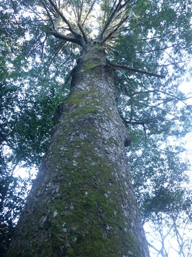
土砂崩れの跡。2019年の台風の時の影響だろうか？
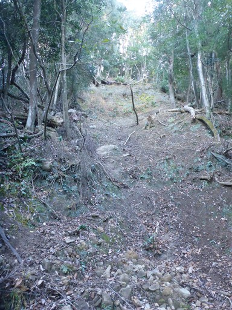
登山道の途中で小さな石祠を発見。たまたま振り返ったら、目立たない場所に鎮座していた。
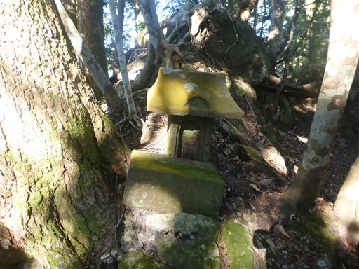
平坦な登山道。この登山道ではシカを多く見かける。リスも一匹見かけた。
動物の方が先に気づいて逃げていくため写真に収めることはできなかった。
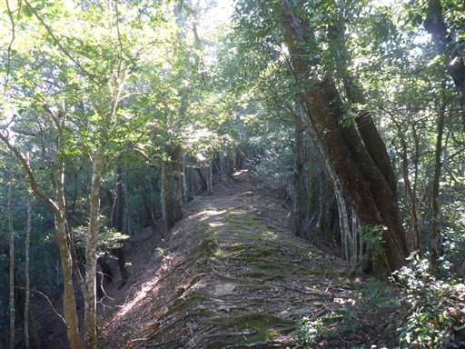
この辺りは地面が荒れている。イノシシが掘り返したのだろうか？
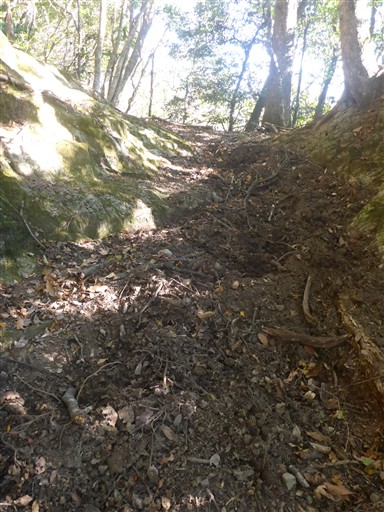
小さな石仏。ほとんど読めないが、文久三亥年と書かれているように見える。
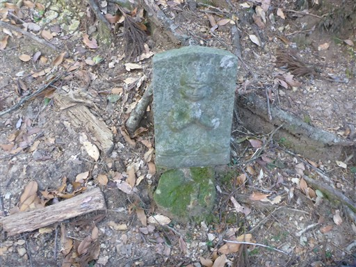
表面が削れた石。
滑りにくくするために削られている？それとも自然の石？ちょっと謎だ。
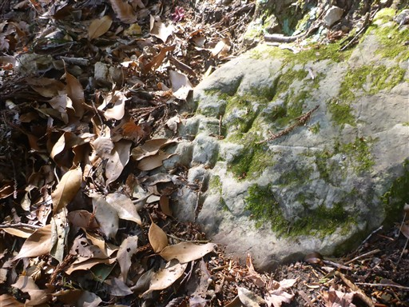
あまり整備されていないのでちょっと怖い橋。
登山道は緩やかでも、周囲の斜面はかなり急峻で、落ちたり迷い込むと危険だ。
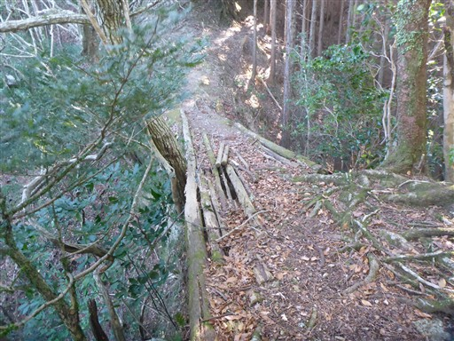
波打ってるつる植物。左の木に絡まった後、別の木に絡みついてしまったようだ。
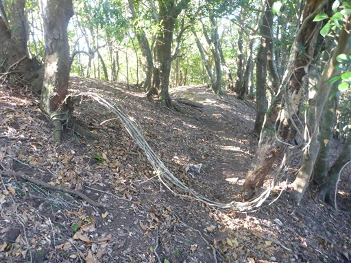
足元に林道が見えてきた。目的地はもうすぐだ。
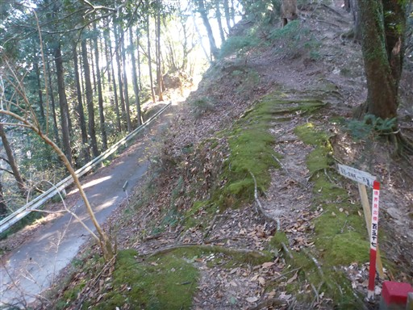
樹林帯を抜けだして、突然視界が開ける。
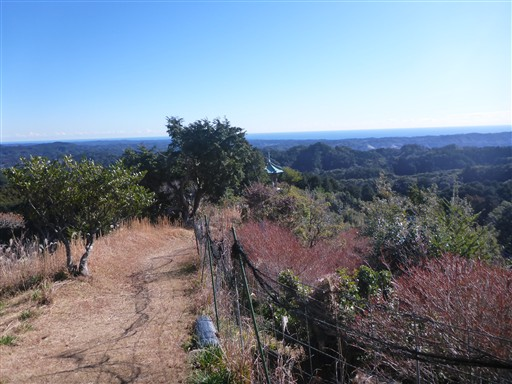
初日山、標高364mだ。
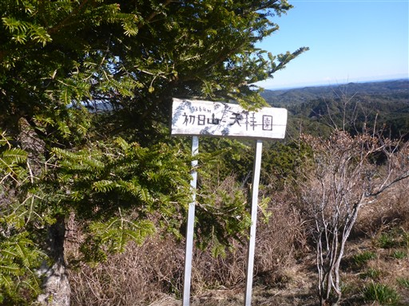
山頂には社が建っている。その裏から出てきた格好だ。
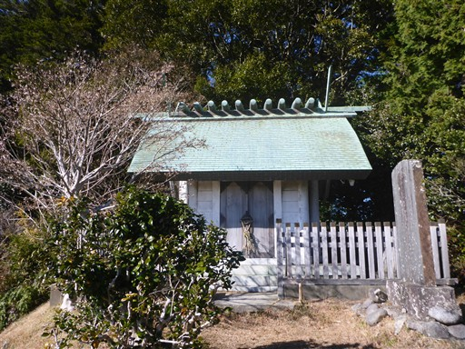
日の光を浴びて太平洋が白く光っている。
前回来たときは霞んで海が見えなかったが、今日はばっちり見える。
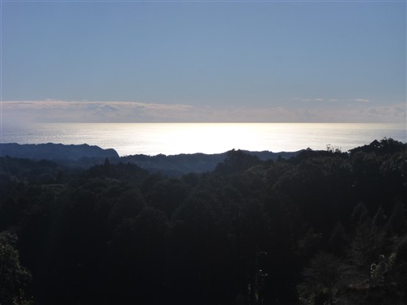
懐かしい日蓮上人像のところに行くと、住職さんがいたので立ち話。
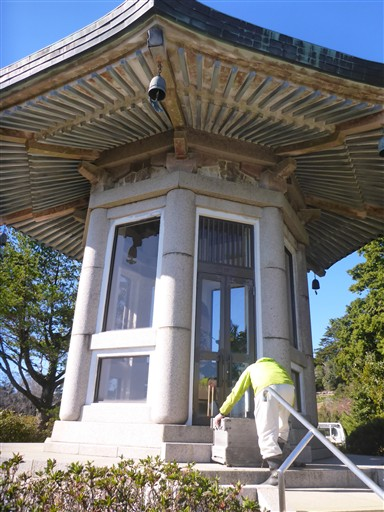
周囲に見えるものや、ここへのアクセス方法など、いろいろ教えていただいた。
見えるのは山と海のみ。住むのは不便かもしれないが、素晴らしい環境だ。
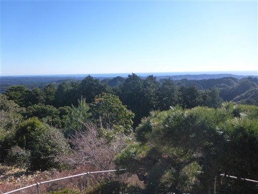
妙法生寺を参拝する。
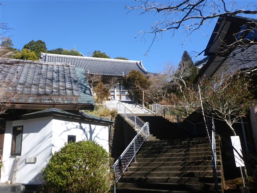
手水舎の水は表面が凍り付いている。
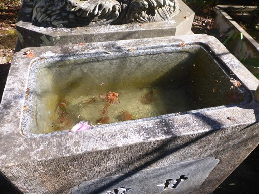
お願いサイコロ。以前訪問した時に子供たちがやったのを思い出す。
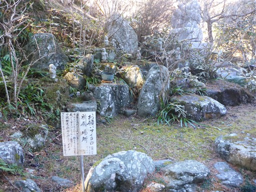
本堂にお参り。前回は中に入った記憶がない。今回は中を拝観させていただいた。
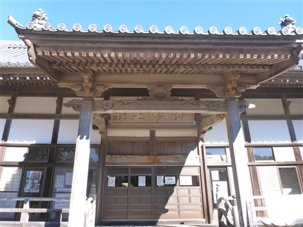
前回訪問時にお世話になったおばあさんと、柴犬と、他には誰もいない静かな空間だ。
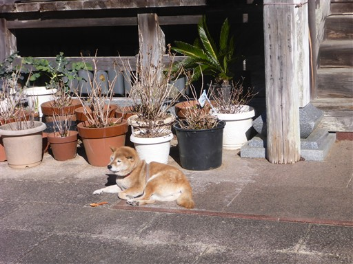
参拝を済ませたら、元来た道を戻る。
このロングコースを再び歩かなければいけない。
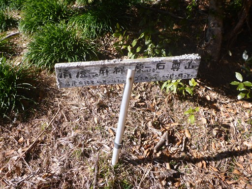
地図には「もみじ郎」と書かれている。往路では見逃してしまった。
もみじの木かと思っていたら「もみ」「次郎」か。
復路は写真もあまり撮らず、どんどん歩く。
一度歩いた道でも、何度か道を間違える。GPSがあるから気にせず歩けるが、
無い時代だと地図とコンパスを頻繁に見ながら歩くことになりそうだ。
石尊山まで戻ってくる。石祠の奥に道が続いていたので、そちらの道で下山することにする。
ちょっと細い道だが、問題なく歩ける。
小さな小さな木も実をつけている。
ところどころに標識がある。ちょっと大回りの道を歩いてきてしまったようだ。
道が大きくえぐられている。古の道なのだろうか？
ソーラーパネル。最近、低山でよく見かけるようになった。
イノシシを捕まえる罠。
最後は林道になる。
七里川温泉に下山する。
超巨大なタイヤの中で咲くツバキ。
温泉宿の近くにキャンプ場がある。どちらも車が多く、賑わっているようだ。
よく考えたら今日は3連休の初日。来るときにアクアラインが混雑していた理由がやっと分かった。
あとは駐車場所まで10分程度歩く。
今回歩いたコースは巨木と原生林が広がる素晴らしいコースだった。
麻綿原高原からの展望も素晴らしく、家からも比較的近いので、またいつの日か再訪したい。